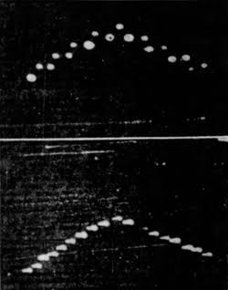

Edward J. Ruppelt wrote that the first sighting was reported by three professors from Texas Technological College, A. G. Oberg, chemical engineer; W. L. Ducker, a department head and petroleum engineer; and W. I. Robinson, a geologist who reported their sighting to the local newspaper.

According to UFO author Jerome Clark, three women in Lubbock reported that they had observed "peculiar flashing lights" in the sky on the same night as the professors' sightings, as well as Carl Hemminger, a professor of German at Texas Tech.the lights appeared to be about the size of a dinner plate and they were greenish-blue, slightly fluorescent in color. They were smaller than the full moon at the horizon. There were about a dozen to fifteen of these lights, they were absolutely circular. It gave all of them an extremely eerie feeling, one of the professors said. The lights could not have been birds, but he also stated that they went over so fast, that they wished they could have had a better look."